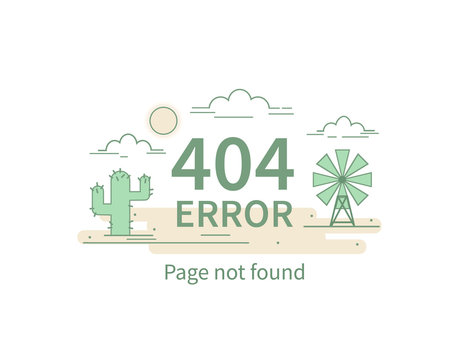

<app-dish-detail *ngIf="dish$ | async as dish; else notFound" [dish]="dish"></app-dish-detail>
<ng-template #notFound>
    <div class="w-full h-full flex justify-center items-center">
        
    </div>
</ng-template>